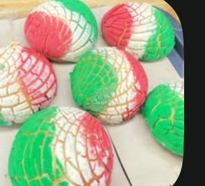
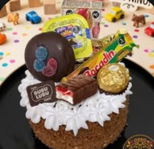

Somos una panadería tradicional con más de 50 años de experiencia. Pan dulce, pasteles por encargo y café recién hechos, en el corazón de Tepic.

Pan dulce, pan de temporada y pasteles para toda ocasión, hechos con la misma receta de hace 50 años.
Conchas tricolor y pan dulce variado, horneado fresco cada día en nuestro mostrador.

Pasteles personalizados con dulces y sorpresas para cumpleaños y fiestas infantiles.
Cotizar un pastel →Horneando con la misma receta familiar desde hace más de cinco décadas.
Pan hecho a mano, sin prisas, todos los días desde temprano.
Acompaña tu pan con un café recién hecho, ahí mismo en el local.
Pasteles personalizados para cumpleaños y fiestas, con dulces y detalles a tu gusto.
Ediciones especiales para cada fecha del año, como nuestras conchas tricolor.
Más de 1,100 personas nos siguen y recomiendan en Facebook.
Calzada del Panteón 39, muy cerca de Avenida Benito Juárez.
Escríbenos por WhatsApp, llámanos o síguenos en redes. Con gusto te atendemos.